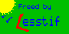

Part I: Frequently Asked Questions

Lesstif is a free Motif clone. It makes it possible to develop and run
motif applications on your pc for free. The libraries and sourcecode
is free because it is developed on a noncommercial basis. Naturally
this also means that the product is not excatly the same as the
original software, (bugs occur!) but it grows in the right direction
as time goes by. More and more programs is reported to run well with
Lesstif.
Since Beta uses Motif to draw windows, all errors in
Lesstif, will also occur as errors in the Mjolner System and you must
to wait for a Lesstif update on work around it in your BETA program by
using another pattern. When ever you find a problem with the Mjolner
System and Lesstif fell free to report it by email (include
program-text, also big program, and description)
Note that Lesstif only is interesting with the Mjolner System if you run Linux.
Here is a cut from the general Lesstif-faq:
LessTif is a clone of the Motif toolkit. Currently LessTif is partially implemented
with most of the API in place. Saying this a lot of the internal functionality is still missing.
Compatibility can have several degrees, the ultimate one being binary compatibility.
This is the one we're aiming for. This can be tested even today on most platforms
on which shared libraries are supported : if you also have Motif® shared libraries,
you can choose which library to use by setting an environment variable such as
LD_LIBRARY_PATH prior to executing an application.
The primary objectives have been to develop the widget code of the LessTif Toolkit.
Intermittently, the window manager (mwm) and the combination of UIL compiler and
libMrm are being worked on.
Volunteers to advance one or more parts of LessTif development, or for writing
documentation without an OSF, X/Open or The Open Group copyright on it, are always welcome.
Download the latest (0.82 or later) version of Lesstif libraries here
Motif is a widely used graphics library for X-Windows. In the Mjolner System Motif is used to implement Lidskjald. The Mjolner System uses Motif to draw windows, buttons etc.
Yes. It runs, but not 100%. All the basic functions works, eg. all the guienv demos
compile and run well.
There is cosmetic errors in some of the widgets, but the functionality seems to
be ok.
Installation isn't normally a problem. If your Linux installation isn't long from a normal installation it should be pretty easy.
- Download Lesstif libraries (0.82 or later). (www.lesstif.org)
- Install Lesstif libraries according to the Lesstif installation guide.
- Make sure that ld (gnu linker) can find the libraries (normally located in /usr/local/lib). Use ldconfig -v | more as root to ensure that. Perhaps you must append /usr/local/lib to linker configuration file /etc/ld.so.conf
- Recompile a subset of the BETA system:
(as the owner of
BETALIB):
cd $BETALIB/guienv/v1.6/private/X11
chmod -R u+w .
rm linux/guienv_unix.o
rm linux/Canvas.o
rm linux/Button.o
rm linux/IconButton.o
rm linux/ToggleButton.o
beta guienv_unixbody
chmod -R a-w .
Now try to compile a couple of the Lidskjalv demos in
/demo/guienv/. It works normally. Try setenv
LD_LIBRARY_PATH path where "path" is the path of your compiled
lesstif libraries if your beta program dont link.
Don't hessitate to
email the me with any errors, and
I'll have a look.
First of all "Cut and Paste" is not implemented correctly in Lesstif, but they
are working on it.
This means thas all Lidskjald patterns, where you can use "Cut and Paste"
does not work correctly with Lesstif.
Second TextEditor.contents.delete doesn't work because it uses an unimplemented
function. This is being fixed by the Lesstif group.